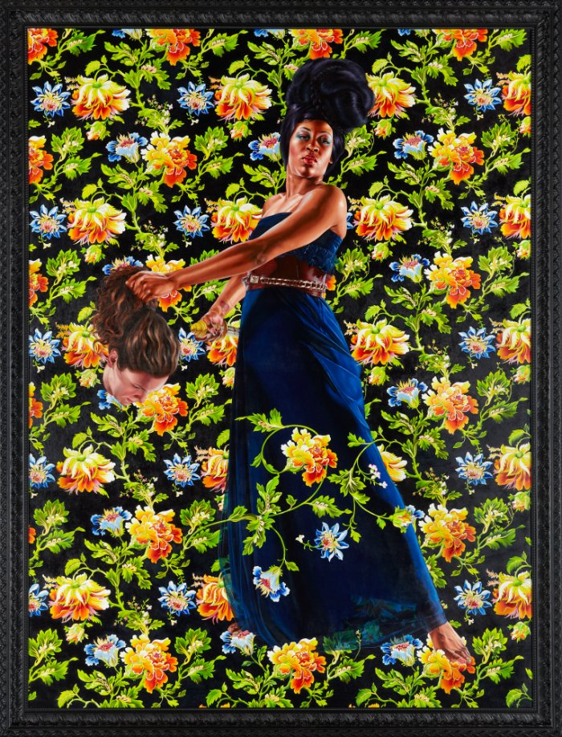

Thoughts on POWER by Kehinde Wiley
"Reinventing classical portraiture and questioning who is represented in the portraits found in museums worldwide, Wiley states, “The whole conversation of my work has to do with power and who has it.” NCMA blog Here is the Wiley in our permanent collection: Judith and Holofernes.

Excerpts from his interview by Jérôme Sans in Kehinde Wiley The World Stage: France 1880-1960 (2014)
JS: "According to you, what are the images of power today?
KW: "That is a very good question, especially in the context of arguably the most powerful man in the world, the President of the United States being the son of an African and a European. What is the image of power in an age in which our young people are questioning what was once the center, where those former peripheral spaces are now being heard? In an age when hip hop is a dominant musical choice and literature itself is being redefined and recontextualized for a myriad audience? At its core, my work strives to be the image of power in the 21st century. Each one of these young souls, these individuals who populate these paintings, each possesses the potential to become beautiful and terrible. It's the potential that matters and its the potential that far to few have been given access to. But increasingly, we the consumers, we the voters, and we the viewers are questioning why so many voices have been unheard."
"I went to the Louvre to look for great masterpieces of Western easel painting, France of course occupying a seat of power with regards to painting. Quite arguably, whether it be in aristocratic portraits or in large-scale depictions of war, the language of power in France had become refined to a level that was unrivaled in the Western world. It was interesting and compelling to fuse that language with the people that I encountered in the streets of some great cities throughout Africa. My goal was to take chance moments, moments of completely unplanned simplicity, and allow that to unfold into a well considered and theatrical portrait. Most of the people represented in the portraits in the Louvre are well practiced in the art of exercising power and enjoying the state of grace that entails. Most of the people in those paintings have spent their entire lives preparing for that moment and those portraits are the denouement, the moment of achievement. In my work, the mode of chance, at a moment when complete strangers are just minding their own business, trying to get to work, blows them into this portrait, filling it with importance, with a sense of ceremony. The point must be that as opposed to garnering great amounts of wealth and using the tactics of domination to perform that state of beauty, these works allow for a complete and radical departure from the traditional role of power."
---
JS: "You put common black people standing as people from "high", white past societies…Why do you think it is important to raise black people as heroes or powerful people?"
KW: "Black people have always been powerful people. My work isn't about attempting to present something that doesn't exist. My work has always been about slowing down and paying attention to the things that actually are as opposed to being distracted by the media driven illusions of what may be. The presence of black American men in popular culture has been almost obsessed with a type of hypersexuality, propensity towards sports and anti-social behavior. This type of identity, for my entire life, has always been something of a mystery. I look at that definition of black American experience, and I see in it something quite exotic and removed from my own life lived. My project has simply been about restoring the viewpoint, restoring the power of view of the viewer to be much more aligned to my experience as a person of color in the world."
---
" My main references are the great masters of portraiture, including anyone from Thomas Gainsborough, Joshua Reynolds, Jean-Auguste Ingres to Antoine van Dyck. My abiding passion has to do with man's desire to see himself principally in the filed. If we look historically at the strength of painting, we've always loved landscape, we've always loved still life. But it is the portrait that is king. Principally because we love looking at ourselves, when we stare at those portraits, sure, we see other people in states of grace, but we also see ourselves imagined. There is implied in this act of looking a type of exchange, a recognition that if someone else can be seen in such a state of esteem, it presupposes a state for our own."